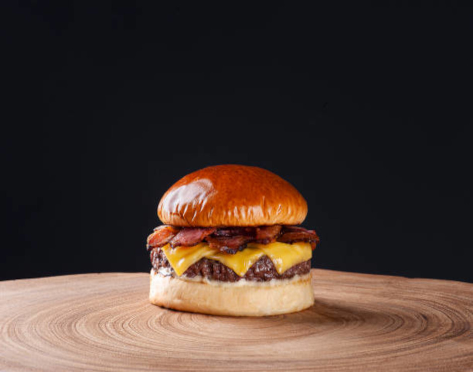

Clássico Saboroso:
é a perfeita combinação de simplicidade e sabor. Começa com uma carne bovina suculenta e grelhada no ponto ideal, trazendo um sabor marcante e autêntico. Sobre ela, o queijo cheddar derretido se espalha generosamente, proporcionando uma textura cremosa e um toque de intensidade. O alface crocante e o tomate fresco adicionam frescor e leveza a cada mordida, equilibrando os sabores com perfeição. Para finalizar, a maionese caseira, feita com ingredientes selecionados, envolve o hambúrguer com uma cremosidade irresistível, garantindo uma experiência clássica e cheia de sabor a cada mordida.
é a perfeita combinação de simplicidade e sabor. Começa com uma carne bovina suculenta e grelhada no ponto ideal, trazendo um sabor marcante e autêntico. Sobre ela, o queijo cheddar derretido se espalha generosamente, proporcionando uma textura cremosa e um toque de intensidade. O alface crocante e o tomate fresco adicionam frescor e leveza a cada mordida, equilibrando os sabores com perfeição. Para finalizar, a maionese caseira, feita com ingredientes selecionados, envolve o hambúrguer com uma cremosidade irresistível, garantindo uma experiência clássica e cheia de sabor a cada mordida.
R$ 19,99

Clássico Bovino:
Um hambúrguer de carne bovina grelhada no ponto perfeito, garantindo suculência e sabor. Acompanhado por uma generosa camada de queijo cheddar derretido, cebolas roxas frescas que trazem uma leve crocância, e picles que adicionam um toque agridoce equilibrado. Tudo isso é complementado com o exclusivo molho especial da casa, que mistura ingredientes secretos para um sabor inesquecível.
Um hambúrguer de carne bovina grelhada no ponto perfeito, garantindo suculência e sabor. Acompanhado por uma generosa camada de queijo cheddar derretido, cebolas roxas frescas que trazem uma leve crocância, e picles que adicionam um toque agridoce equilibrado. Tudo isso é complementado com o exclusivo molho especial da casa, que mistura ingredientes secretos para um sabor inesquecível.
R$ 26,90

Duplo Suíno:
Duas camadas generosas de hambúrgueres de carne suína grelhados, cada um perfeitamente temperado e grelhado para um sabor rico e robusto. O queijo suíço derretido entre as camadas proporciona uma textura cremosa, enquanto o bacon crocante traz um contraste perfeito de sabor defumado. Finalizado com um toque de molho de mostarda e mel, que equilibra doçura e acidez, criando uma experiência completa e irresistível.
Duas camadas generosas de hambúrgueres de carne suína grelhados, cada um perfeitamente temperado e grelhado para um sabor rico e robusto. O queijo suíço derretido entre as camadas proporciona uma textura cremosa, enquanto o bacon crocante traz um contraste perfeito de sabor defumado. Finalizado com um toque de molho de mostarda e mel, que equilibra doçura e acidez, criando uma experiência completa e irresistível.
R$ 26,90

Cordeiro Premium: Um hambúrguer de carne de cordeiro cuidadosamente temperado com especiarias tradicionais, grelhado para alcançar a suculência e o sabor autêntico dessa carne nobre. Coberto com queijo feta que, com sua textura cremosa e sabor levemente salgado, complementa perfeitamente o cordeiro. Cebolas roxas grelhadas adicionam um toque adocicado, enquanto a maionese de alho artesanal proporciona uma explosão de sabor, criando uma combinação sofisticada e deliciosa.
R$ 29,90